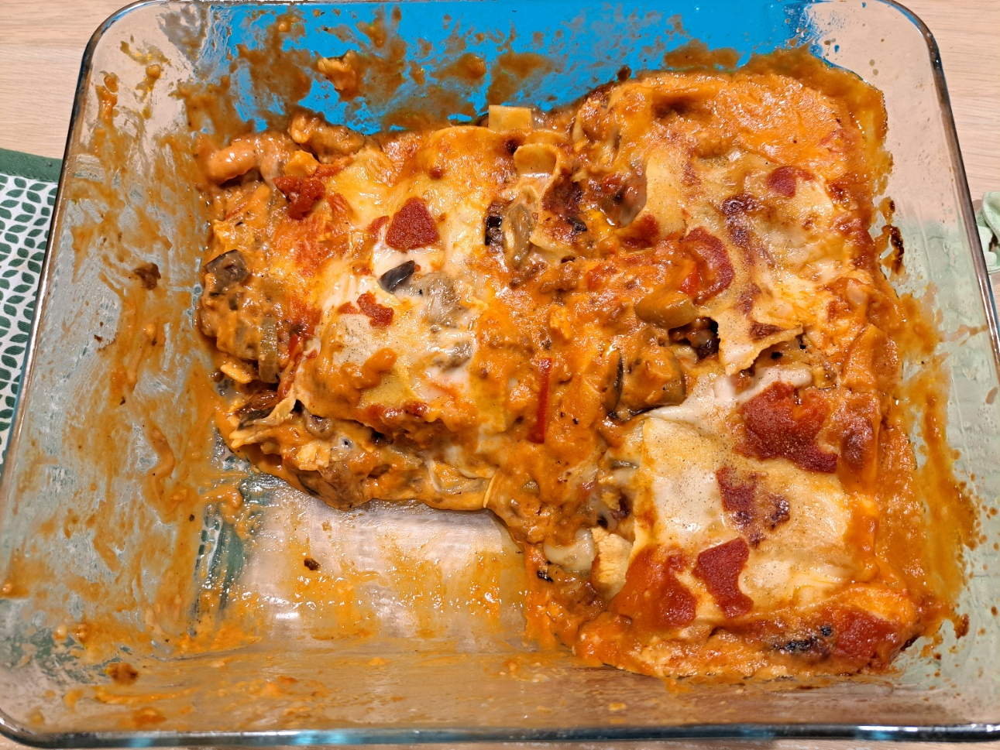

Vegetarian Ratatouille Lasagna with Raclette

Instructions
Prepare the Ratatouille
Heat olive oil in a large skillet over medium heat. Sauté onion and garlic until softened, about 3-4 minutes. Add eggplant and bell peppers, cook for 5–6 minutes until slightly tender. Add zucchini and tomatoes. Season with thyme, oregano, salt, and pepper. Simmer on low heat for 15–20 minutes, stirring occasionally, until vegetables are tender and flavors meld. Set aside.
Prepare the Béchamel
In a saucepan, melt butter over medium heat. Add flour and stir to form a roux. Gradually whisk in milk until smooth. Season with salt and pepper. Set aside.
Cook the Vegan Haché
In a skillet, heat a drizzle of olive oil. Cook vegan haché until lightly browned. Stir in half of the tomato sauce and combine well. Set aside.
Assemble the Lasagna
Preheat oven to 180°C (350°F). Spread a thin layer of tomato sauce on the bottom of a baking dish. Place a layer of lasagna sheets. Spread some ratatouille over the sheets. Add a layer of vegan haché with tomato sauce. Pour a little béchamel over and top with slices of raclette cheese. Repeat layers until ingredients are used, finishing with béchamel and raclette.
Top and Bake
Sprinkle shredded mozzarella over the top. Cover with foil and bake for 30 minutes. Remove foil and bake 10–15 minutes more until golden and bubbling.
Serve
Let rest for 5–10 minutes before slicing. Serve warm, ideally with a fresh green salad.